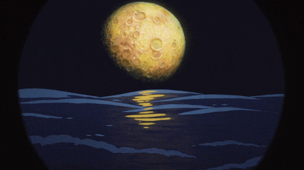
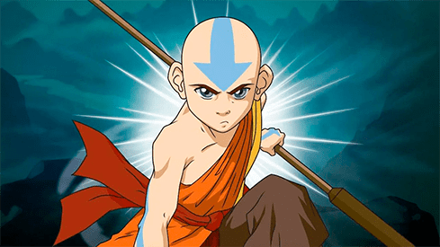

La leyenda de Aang
Tiene lugar en un mundo de fantasía el cual hogar de seres humanos, animales fantásticos y espíritus.
La civilización humana se divide en cuatro naciones:
Las Tribus Agua, el Reino Tierra, los Nómadas Aire, y la Nación del Fuego.
Dentro de cada nación existen personas conocidas como "Maestros" que tienen el poder innato y la capacidad de controlar y manipular el elemento del mismo nombre de su nación. Cada elemento tiene un estilo propio de artes marciales, haciendo que hereden las ventajas y debilidades de las artes marciales que se les asignó. Los cuatro tipos de artes de control son Agua Control, Tierra Control, Fuego Control y Aire Control.
Maestro Avatar
Cada generación produce el Avatar, una persona que es capaz de controlar los cuatro elementos.
A través de los siglos, innumerables encarnaciones del Avatar han servido para mantener las cuatro naciones en armonía, y mantener la paz y el orden mundial.
El Avatar también sirve como puente entre el mundo físico y el mundo espiritual, lo que él o ella usa para resolver los problemas que los Maestros normales no pueden.
El Avatar posee un poder único, llamada el Estado Avatar, un mecanismo de defensa que dota al Avatar con todos los conocimientos, competencias y habilidades de todos los últimos Avatares actúa como un mecanismo de defensa. Si un Avatar es asesinado en el Estado Avatar, el ciclo de la reencarnación se romperá y el Avatar dejará de existir.
Katara
Maestra Agua
Katara es una Maestra Agua de catorce años de edad, al comienzo de la historia ella es la última maestra agua en la Tribu Agua del Sur tribu donde se practica el Agua Control.
Ella y su hermano mayor, Sokka, descubre un maestro del aire llamado Aang, el Avatar perdido hace mucho tiempo, congelado en un iceberg, y le acompañan en su búsqueda para derrotar a la Nación del Fuego para traer la paz al mundo desgarrado por la guerra.
El Agua Control es el místico arte de la hidroquinesis, la habilidad de controlar el agua, así como sus diversas formas. Este tipo de arte es utilizado por la gente de la Tribu Agua.
El agua es el elemento del cambio.
La luna es la fuente de poder del agua, y los Maestros Agua originarios aprendieron observando cómo la luna empujaba y tiraba las mareas. Las Tribus Agua son las únicas personas que no aprendieron control de un animal.
Una gran debilidad del Agua Control es su dependencia de la luna. Aunque los Maestros Agua ganan su poder de la luna, la ausencia de la luna durante un Eclipse Lunar da los resultados en una pérdida completa de la capacidad del Agua Control.
El estilo de lucha del Agua Control es principalmente por fluidos elegantes, que actúan concertadamente con el medio ambiente. Los Maestros Agua lidian con el flujo de la energía; dejan que su defensa se convierta en su ofensiva, convirtiendo las fuerzas propias de sus oponentes contra ellos.
Es la habilidad y la destreza del usuario que determina la victoria. En el caso del Agua Control sin embargo, la capacidad de un Maestra Agua para llevar a cabo todo el Agua Control que son capaces es dependiente de la cantidad de agua disponible.
Thop

Maestra Tierra
Toph es una maestra de gran talento, tiene la capacidad de manipular, remodelar y controlar telequinéticamente la piedra, la arena, la tierra, y más tarde, el metal.
Toph es ciega de nacimiento, pero gracias a sus habilidades de Tierra Control, puede localizar objetos y sus movimientos percibiendo sus vibraciones en la tierra que la rodea, ella aprendió en secreto el Tierra Control más avanzado. Con el tiempo, se convierte en la primera persona que desarrolla la capacidad de "doblar" también el metal.
Los responsables de que los humanos aprendieran la Tierra Control fueron los tejones topo, que son conocidos como los Maestros Tierra originales. Los humanos aprendieron Tierra Control observando e imitando los movimientos de los tejones topo que habitaban naturalmente en las montañas de lo que ahora es el territorio del Reino Tierra.
Los ataques comunes incluyen hacer levitar tierra y/o rocas, y arrojarlas a los enemigos, controlándolas con una serie de puñetazos y patadas. Un bloque de tierra levitador puede servir también como escudo cuando se ubica frente a un maestro.
Descubrí : Leyenda de Tierra Control
De acuerdo a la leyenda, dos enamorados, cuyos pueblos eran enemigos, llamados Oma y Shu aprendieron este arte para encontrarse en las montañas que los dividían. Los pasadizos hechos por ellos fueron llamados "Cueva de los Dos Enamorados". Cuenta también la leyenda que Shu (el hombre) murió en la guerra entre los dos pueblos, y con su furia descontrolada, Oma usó sus poderes para crear la ciudad del Reino Tierra "Omashu" llamada así en honor a los dos enamorados.
Zuko
Maestro Fuego
El Príncipe Zuko es un Maestro Fuego y un príncipe de la Nación del Fuego que había sido exiliado antes del comienzo de la serie. Él estaba empeñado en la captura de Aang, el Avatar, para restaurar su honor y su derecho al trono, pero a medida que avanza la serie comprende que la guerra de la Nación del Fuego ha hecho mucho daño con el paso de los años y por eso es que alcanza a recapacitar a tiempo. Las marcas distintivas de Zuko son una gran cicatriz que parte desde su ojo izquierdo hasta su oreja.

El Fuego Control es la capacidad de la piroquinesis de crear y controlar el fuego. Elemento del poder consiste en la fuerza y la voluntad inquebrantable para realizar las tareas y deseos. Durante la Guerra de los Cien Años, la militarista Nación del Fuego retorció el control sobre el fuego para ser alimentado por la ira, el odio y la rabia.
El Fuego Control se alimenta del sol, y los primeros Maestros Fuego humanos derivaron sus técnicas de Fuego Control de los dragones.
Los maestros fuego obtienen su poder del sol y otros cuerpos celestes, como los cometas. Un eclipse solar tiene el potencial de negar por completo el poder de un maestro fuego.
A diferencia de otras disciplinas, el Fuego Control tiene pocos movimientos defensivos aparte de bloquear y esquivar. Usa descargas concentradas de fuego para aplastar a sus oponentes, antes de asestar un golpe fatal. Patadas giratorias y rápidas series de puñetazos, son algunas de las diversas formas de ataques ofensivos que tiene el Fuego Control. Los maestros fuego también se dice que pueden extraer la energía de la energía volcánica y relámpagos.
Aang
El último Maestro Aire
La serie muestra la aventura de Aang para convertirse en el Avatar, él es último monje nómada del Aire que posee la habilidad de manipular el aire de su entorno.
Los demás monjes fueron asesinados por la Nación del Fuego, quienes creyeron que así evitarían la reencarnación del Avatar y romperían el ciclo, pero resulta que Aang estuvo congelado 100 años dentro de un iceberg junto a Appa su bisonte volador.
A la edad de 12 años debe aprender a manipular los otros 3 elementos en medio de la guerra para traer paz y equilibrio en las Naciones. Su misión es derrotar a la Nación del Fuego y restaurar la paz y la armonía en el mundo. Para lograrlo, Aang y sus nuevos amigos viajan para encontrar y aprender de los Maestros el resto de las artes de control (agua, tierra y fuego), mientras evitan ser capturados por la Nación del Fuego.
El Aire Control es la capacidad de la telequinesis de controlar y manipular las corrientes de Aire. El Aire es el elemento de la libertad. Los Nómadas Aire se separaron de los problemas y las preocupaciones mundanas, la búsqueda de la paz y la libertad es la clave para resolver sus dificultades en la vida. Los Maestros Aire han buscado continuamente la iluminación espiritual, aprendieron su control de los bisontes voladores.
La clave del Aire Control es la flexibilidad, encontrar y seguir el camino de menor resistencia. El Aire Control se caracteriza por ser casi puramente defensivo. Debido a su espiritualidad éste arte control se centra en torno a la movilidad, en evadir y eludir al oponente.
El Aire Control está balanceada y no es más fuerte o mejor que las demás artes, aunque es fácilmente la más dinámica y ágil de los cuatro. Se adaptan a la situación en torno a ellos y prefieren maniobras evasivas en lugar de la confrontación directa. Es la habilidad y el poder del usuario que determina la victoria.
Libros
Compuesta por 3 temporadas y 61 capitulos emitida por Nickelodeon en 2008.
En cada tempora o “Libro” como está separada le serie indicará qué elemento es el próximo a dominar por Aang para lograr convertirse en el Avatar.
Ésta historia es de animación y disfrutada por niños y adultos, con una hermosa trama y enseñanzas para todas las edades. Avatar es sin duda una de las mejores series televisadas hasta el momento.
También existen secuelas más actuales en live-action mirá el trailer
Sumate a la comunidad Avatar